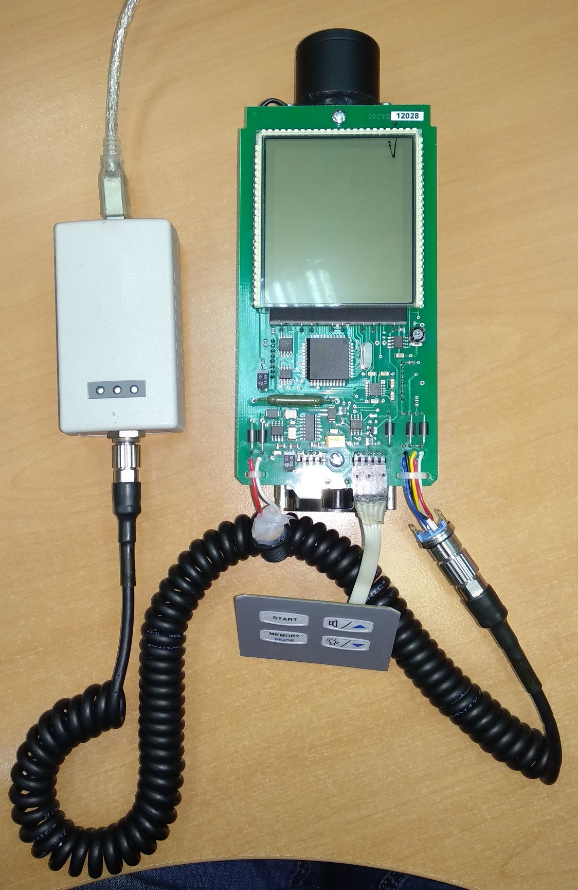

Как записать дату и время
- Подключить дозиметр к адаптеру USB 
- Запустить программу BackgroundCalibration. Дозиметр подключится автоматически
- Нажать "Запись идентификационных данных"
- Записать серийный номер, месяц и год производства


Если перед тем, как нажать "Запись..." НЕ выделять строку с прибором, Background сам подставит сегодняшнюю дату